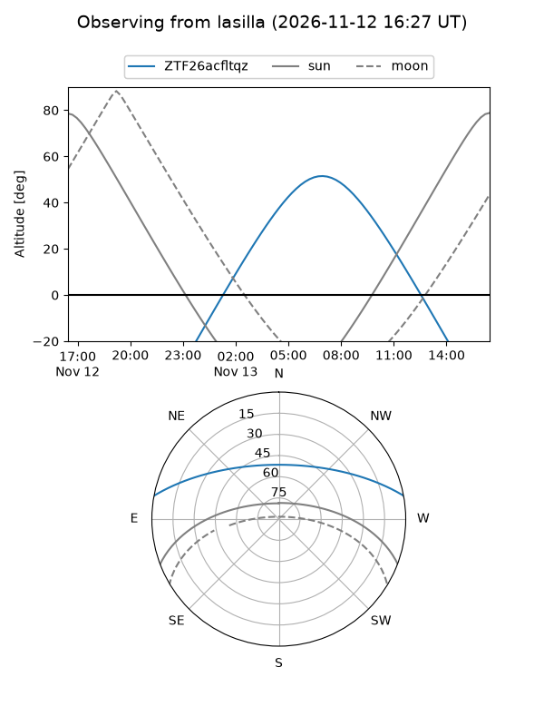
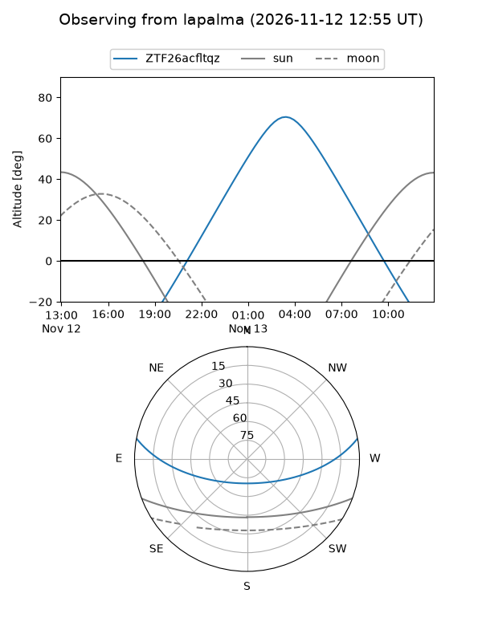
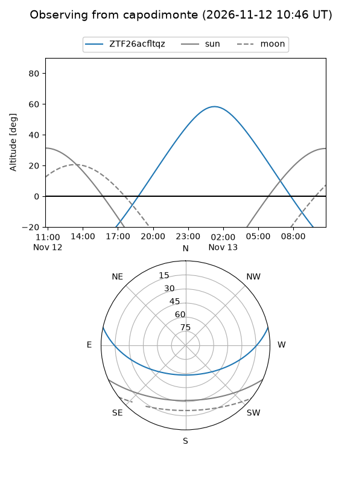
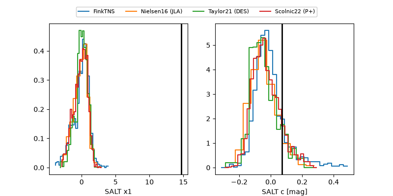

ZTF26acfltqz
Target ZTF26acfltqz at 2026-11-12 17:35
Aliases and brokers:
FINK-ZTF: ztf.fink-portal.org/ZTF26acfltqz
Lasair-ZTF: lasair-ztf.lsst.ac.uk/objects/ZTF26acfltqz
ALeRCE-ZTF: alerce.online/object/ZTF26acfltqz
Direct TNS query: direct search
alt names
ZTF26acfltqz (ztf,fink_ztf)
Coordinates:
equatorial (ra, dec) = 84.9839,+9.21879
equatorial (HMS+DMS) = 05:39:56.13,+09:13:07.65
galactic (l, b) = (196.2938,-11.33843)
Flags:
peak dt:
Photometry:
last atlasc=18.84, atlaso=nan, ztfg=19.43, ztfr=19.72
1 atlasc, 1 atlaso, 6 ztfg, 6 ztfr detections
Lightcurve
Visibility



Additional plots
